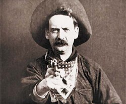

Le Origini e il Cinema Classico di Hollywood
La storia del cinema inizia ufficialmente nel 1895 con i fratelli Lumière, ma è con registi come Méliès e Griffith che il cinema impara a raccontare storie. Tra il 1917 e il 1927 nasce il Cinema Classico di Hollywood, un sistema che perfeziona il montaggio di continuità e la narrazione centrata sui personaggi.
Questo stile è diventato lo standard mondiale: l'azione è sempre chiara, il tempo è lineare e ogni inquadratura serve a far avanzare il racconto. Film come Il Mago di Oz o Ombre Rosse rappresentano la perfezione di questo equilibrio tra arte e industria.
